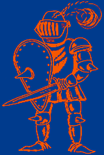

| Rytíøi krále Artu¹e |
 | |
|
VÝZVA GENERÁLA Krutí katové na bubny bijí To viking¹tí vrazi na moøe míøí Ni jediný nezbude, by slzy ronil Z lupièù ¾ádný zpìt se nevrátí Rytíøi semknutí, meèe a ¹títy Stateèná srdce - udatnost sama Hlavièky useknou ubohým lumpùm Jak ¹tìòátka nebohá topit je budou Rozmysli si, Vikingu, rozmysli Na matièku, tatíèka pomysli Zavøou se nad tebou na vodì kola Mít na hlavì rohy, to znaèí vola... |
A proto král Artu¹, jen¾ dobøe ví, ¾e správný bojovník a bojovnice toho mají víc v hlavì, ne¾ na ní, svolává lid své zemì. Svolává i ve¹keré dal¹í chrabré cizozemské rytíøe, kteøí prohlédli, na èí stranì je právo. Svolává v¹echny stateèné a moudré, aby hájili spravedlnost Kulatého stolu.
Pod ostøím Excaliburu, pod vlajkou Camelotu, pod moudrostí èarodìje Merlina: Bojuj! Bojuj! Bojuj! |
|